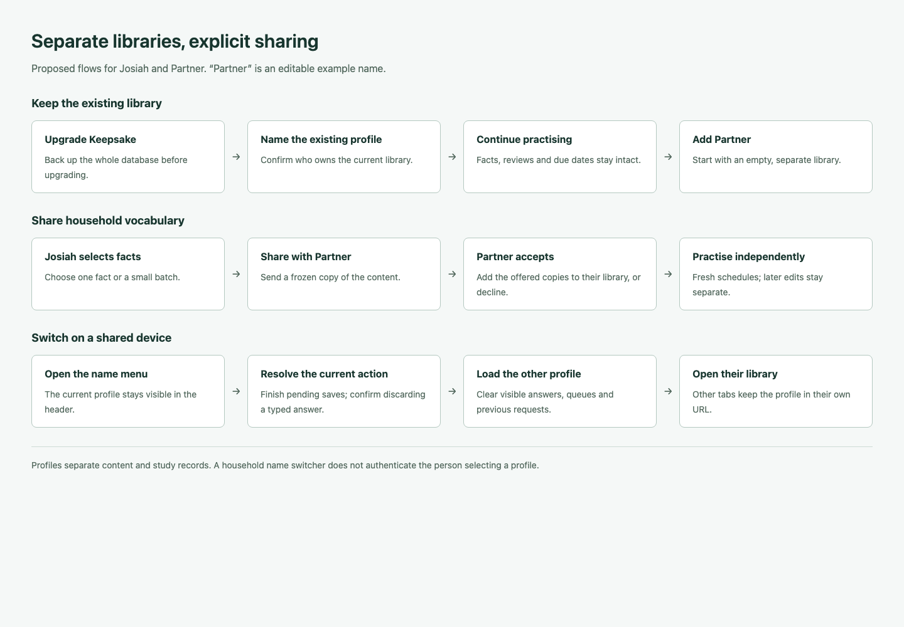
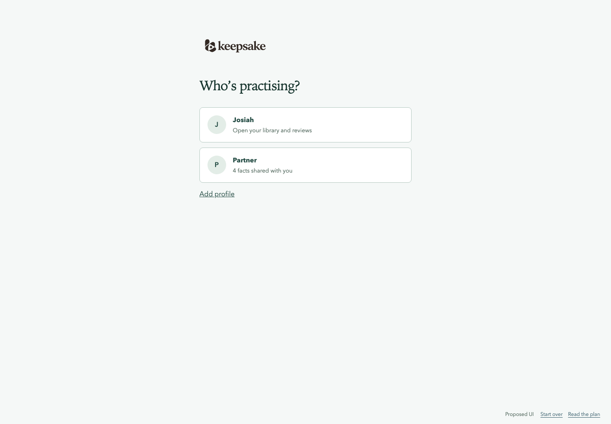
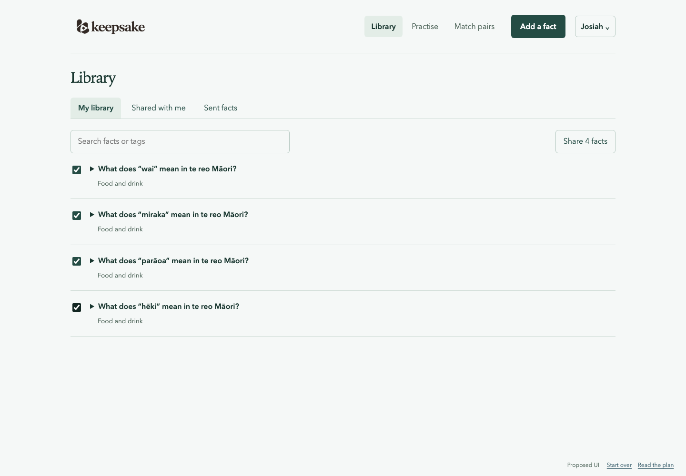
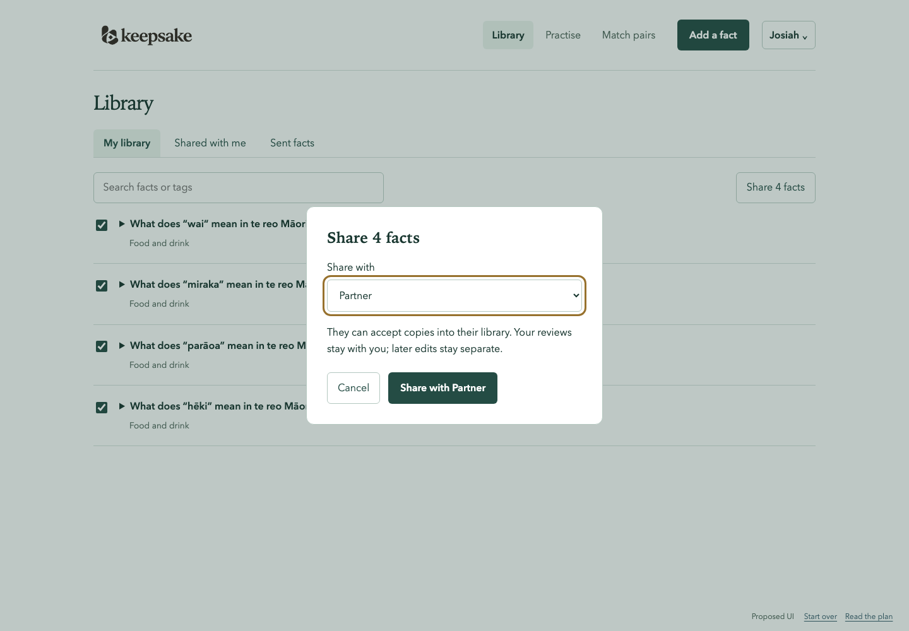
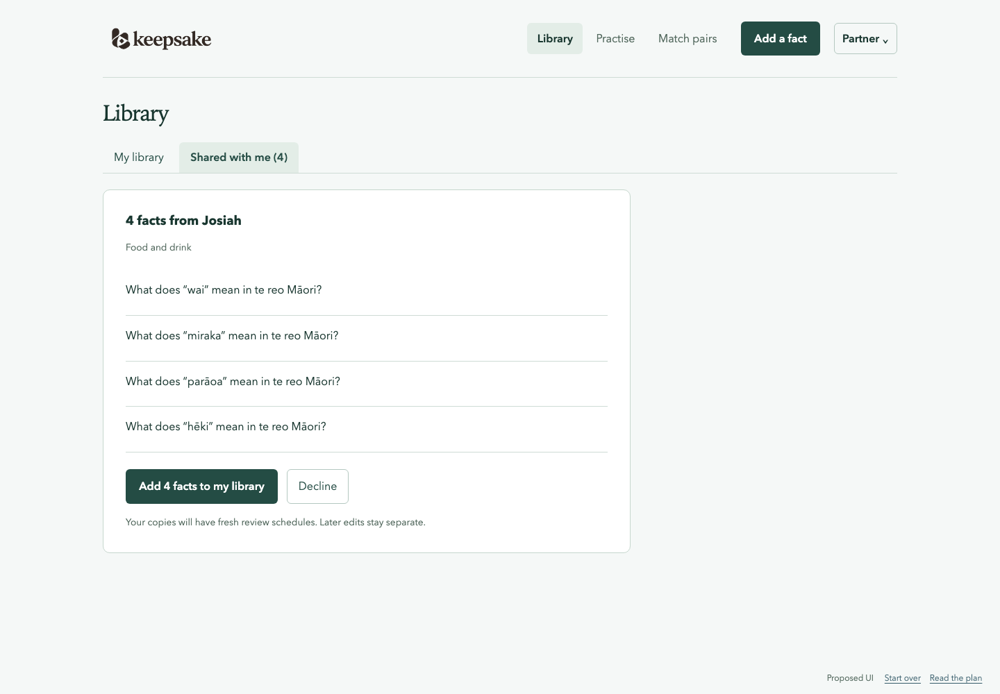
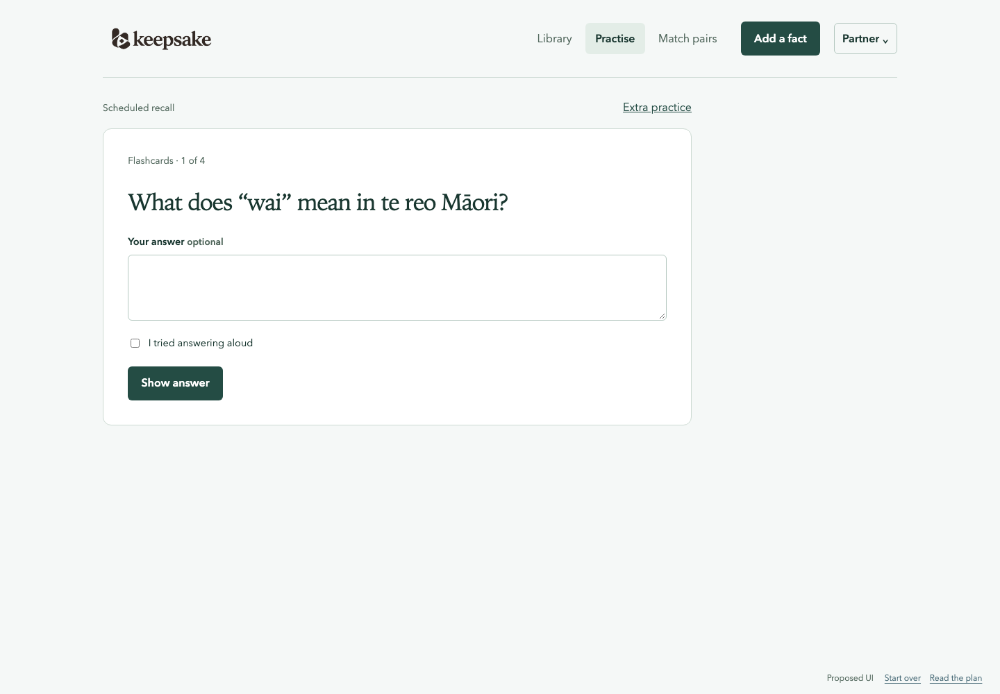
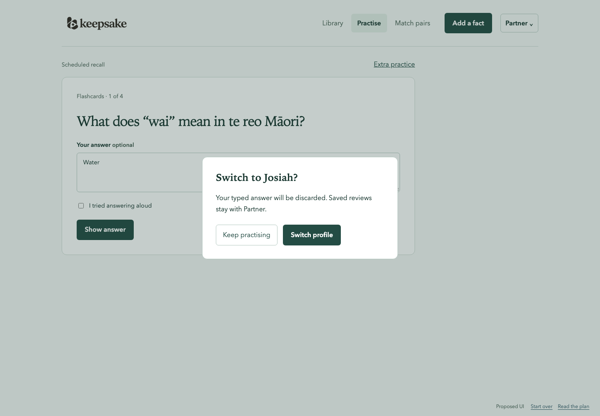
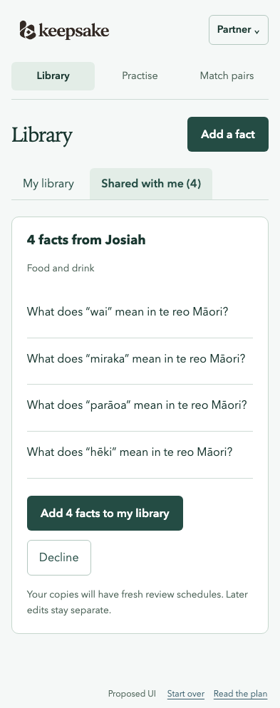

Multi-profile support for Keepsake
Approved 25 October 2026 · Design mockups and implementation scope
Give each profile its own library and learning history. Sharing sends an offer that the recipient can accept as an independent copy. Existing facts and progress stay with the first profile.
Mockups use example data. “Partner” is a placeholder for your partner’s name. The prototype uses temporary browser memory and makes no application or database requests.
Keep libraries and learning separate
| Area | Proposed behavior |
|---|---|
| Profiles | Create, name and switch profiles. Each device can remember its last choice; each open tab keeps its own profile. |
| Libraries | Facts, sources, tags, generated practice prompts, search, counts and matching banks belong to one profile. |
| Learning | Each person has their own FSRS state, due queue, exposure cooldowns, review history, daily intake, study budget and timezone. |
| Sharing | Select one fact or up to 20 facts, choose the recipient, and confirm. The recipient sees the questions in “Shared with me” and can accept or decline each offer or a selected batch. |
| Accepted copies | Copy the prompt, answer, context, citation, tags and practice content into new owned records. Start fresh schedules. Preserve “Shared by Josiah” provenance. Do not copy reviews, successful recall, lapses or cooldowns from the sender. |
| Later edits | Copies remain independent if either fact is edited later. A new fact-editing interface is outside this profile feature. A new share is another explicit offer; it never overwrites a recipient’s existing fact or resets their progress. |
| Settings | Personal name, daily new-fact limit, study budget and timezone. Keep the existing FSRS algorithm and default retention policy. |
Confirmed access model: a household name switcher, without passwords. Anyone with access to the app can switch profiles. Separate libraries prevent accidental mixing; authenticated private accounts would require a separate login/session design.
Keep the current quiet interface: one name menu in the header, “My library” and “Shared with me” within Library, and a Share action for selected facts. A “Sent facts” view lets the sender withdraw pending offers. Practise keeps scheduled recall and varied extra practice within the selected person’s own library.
Switch without misattributing a review
- The selected profile is part of the URL, for example
/p/2/library. Existing tabs do not change when another tab switches. - Finish an in-flight save before switching. If a save failed, keep its retry tied to the original profile; do not silently drop or reassign it.
- Ask before discarding an unsaved typed answer. Saved feedback/exposure remains with its original owner even if the answer is not rated.
- Clear the old library, queue, matching round, displayed answers, feedback IDs, timers and exposure cache. Ignore delayed responses from the previous profile before rendering the new one.

Proposed screens







Add ownership to the existing Rust and SQLite architecture
Keep one SQLite database, the static TypeScript website, the Rust server, and the standalone Rust CLI. Each fact has exactly one owner, so its existing recall target and target-keyed schedule remain sufficient. There is no shared schedule or cross-profile enrollment layer.
Data model
| Record | Change |
|---|---|
profiles | Stable ID, unique CLI handle, editable display name and creation time. Name changes do not change IDs. Reject blank names, oversized names and duplicate handles. |
facts | Required profile_id. Practices and learning targets inherit ownership through the fact. Index owner plus pagination/search keys. |
schedule_states | Keep the target ID primary key. Check the target’s owner on every load and update. Scope all queue and daily aggregate queries by owner. |
scheduler_settings | Replace singleton id = 1 with one versioned row per profile; preserve existing values for the original profile. |
| Reviews and study evidence | Attach a profile to reviews, study events and exposure batches. Verify it matches the fact/target owner. Replay lookup must check owner before returning saved JSON. |
fact_shares | Sender, recipient, source fact reference, frozen validated snapshot, snapshot fingerprint, status, accepted copy ID and timestamps. Keep snapshots if the source later changes or disappears. |
| Accepted fact provenance | Link the accepted copy to its share. That link is unique so retries cannot create more copies. |
Use foreign keys and composite ownership checks where practical, backed by one typed Rust ProfileId context through repository functions. A bare fact, target, practice or review ID must never bypass the profile check.
API and client contract
GET/POST /api/profiles
PATCH /api/profiles/{profile_id}
GET/POST /api/profiles/{profile_id}/facts
GET /api/profiles/{profile_id}/facts/{fact_id}
GET /api/profiles/{profile_id}/practice
GET /api/profiles/{profile_id}/facts/sample
GET/POST /api/profiles/{profile_id}/study/events
GET /api/profiles/{profile_id}/study/queue
POST /api/profiles/{profile_id}/study/exposures
GET/PUT /api/profiles/{profile_id}/study/settings
GET/POST /api/profiles/{profile_id}/shares
POST /api/profiles/{profile_id}/shares/accept-batch
POST /api/profiles/{profile_id}/shares/{share_id}/accept
POST /api/profiles/{profile_id}/shares/{share_id}/decline
POST /api/profiles/{profile_id}/shares/{share_id}/withdrawScope practice generation, source approval, target inspection, and review history the same way. Health and the API schema remain unscoped. Regenerate OpenAPI, the TypeScript client and offline SQLx metadata.
Old unscoped content/study endpoints may resolve the sole profile only while exactly one exists. Once there are multiple profiles, return a clear profile_required error rather than choosing the first person. The browser and current CLI always send an explicit profile.
Make sharing transactional and repeatable
- Validate every selected fact belongs to the sender; validate the recipient exists and is different. Sharing snapshots all selected content in one transaction. One failed item saves none.
- A submission UUID makes a send retry return the original offers. Return an existing identical pending offer rather than adding another inbox item.
- Accept verifies the recipient and pending status, then creates new fact/practice/target IDs and a new schedule in one
BEGIN IMMEDIATEtransaction. Canonical recall starts eligible; extra generated prompts remain supplementary until the recipient approves them. - Record the accepted fact ID with the offer. Repeating acceptance returns that same copy. Accepting a batch is all-or-nothing.
- Decline is repeatable. The sender can withdraw pending offers. Accept-versus-withdraw races serialize: the first committed action wins, and the other receives the recorded status.
- Pending offers never enter searches of owned facts, matching banks or due queues. No automatic syncing, merging, acceptance or importing the sender’s learning state.
Keep CLI and agent capture usable
keepsake profiles list
keepsake profiles create "Partner" --handle partner
keepsake --profile josiah add --url URL --prompt "Remember …"
keepsake --profile partner due
keepsake --profile partner study submit --file attempt.json
keepsake --profile josiah share 12 13 14 --to partner
keepsake --profile partner shares list
keepsake --profile partner shares accept SHARE_ID
keepsake --profile partner shares decline SHARE_ID
keepsake --profile josiah shares withdraw SHARE_IDUse --profile or KEEPSAKE_PROFILE; permit the sole profile as a compatibility default. With two profiles and neither supplied, fail before fetching a URL, calling an agent, or writing facts. Bind the chosen profile before asynchronous agent work. Imports, generation, approvals, searches and event exports use that same owner.
Update the fact-adding skill in this repo and its installed copies in ~/.codex and ~/.claude. It must ask or use an explicitly configured profile when selection is ambiguous. Agent output cannot select or override the profile receiving imported facts.
Preserve the current library and every review
- Take a full SQLite backup before deployment, using the existing backup command. Rehearse the migration against a temporary copy of a 0.3.0 fixture.
- Append
0005_profiles.sql; do not edit released migrations. Create one initial profile owning all existing facts, prompts, schedules, reviews, settings, study events and exposure batches. - Preserve original IDs, JSON evidence, memory parameters, due dates, cooldowns, history cutoffs and optimistic versions. No FSRS recomputation, duplicated facts or reset of progress.
- Use table rebuilds where SQLite constraints require them. Avoid a permanent “default to profile 1” column value: future writes must carry an owner.
- On first web use, ask for the existing profile’s name. Renaming this profile changes presentation only. Creating Partner starts an empty library and default settings; existing household vocabulary arrives only through sharing.
- Keep backup/restore as a full-household snapshot, including profiles and pending shares. A downgrade uses the pre-upgrade backup in a new database path; an older binary must not open the migrated database. Restoring that backup discards post-upgrade changes, so retain the upgraded file.
Keep the learning model individual
The saved learning and retention research supports adapting spaced practice to a person’s observed recall. That motivates keeping each learner’s memory state and exposure separate. Shared-content offers, copy-on-accept, and this interface are product proposals; the research does not establish that this particular sharing flow improves retention. This plan keeps the existing FSRS and recognition-versus-recall policies unchanged.
Implement in five reviewable changes
| Change | Scope | Exit check |
|---|---|---|
| 1. Ownership and migration | Profiles, ownership-aware core repositories, per-profile settings, preserved evidence, migration fixtures. | 0.3.0 data survives byte-for-byte where promised; all reads and aggregates filter their owner. |
| 2. API, CLI and capture | Profile routes and commands, explicit actor validation, generated client and SQLx metadata, both installed capture skills. | No ID lookup, agent import, UUID replay or legacy endpoint can accidentally use another library. |
| 3. Sharing | Frozen offers, owned copies, provenance, inbox operations and CLI sharing. | Repeat/retry and concurrent accept/withdraw tests prove one accepted copy with fresh memory. |
| 4. Web profiles and inbox | Chooser, header menu, URL-scoped views, own-library screens, sharing dialog, inbox, settings and switch handling. | Desktop/mobile keyboard and delayed-response flows keep content and writes attached to the right profile. |
| 5. End-to-end verification | Browser coverage, visual baselines, backup/restore, container smoke, release and README guidance. | All gates green against one temporary database with two profiles and two browser contexts. |
Do not deploy an intermediate state that allows a second profile before every existing content and study route enforces ownership. This sequence describes review boundaries; publish the feature only after the full set is complete.
Acceptance tests
- Migration retains the current owner’s exact history and schedule. The new partner profile has no facts or inherited success history.
- Each profile’s search, pagination totals, matching-bank eligibility, practice sampling, due counts, local-day intake, time budget and timezone boundaries use only its library.
- A fact/practice/target/review/event ID from another profile returns a scoped not-found result. Another owner’s feedback ID or submission UUID cannot replay or mutate their state.
- Share lookup, acceptance, decline and withdrawal verify sender/recipient roles. Reusing a send UUID with a different recipient or content conflicts. Pending snapshots remain unchanged when the source changes.
- Sharing copies content and source citations into fresh IDs; accepting twice creates one copy. Declining and withdrawing never create a learning target.
- Sender browsing, grading, changed content or a new share never changes the recipient’s accepted copy or schedule. Extra generated prompts do not inherit qualifying recall approval.
- Two people can grade simultaneously. Same-profile stale writes still conflict. Batch shares/accepts roll back fully on invalid items.
- Browser switching handles an empty library, delayed reads, an unsaved answer, saved-but-unrated feedback, pending writes, failed retries, matching and separate tabs/devices.
- CLI manual capture, JSON import, URL/agent generation, scheduling and shares reject ambiguous profile selection before external calls or writes.
- Full backup and restore retains both libraries, settings, evidence and share states. Native container startup/migration and existing confinement checks remain green.
Required checks remain pnpm check, pnpm test, pnpm gen:client, pnpm sqlx:check, and native container CI. New browser coverage uses the built SPA and real Rust server with temporary SQLite. Review desktop/mobile screenshots and keyboard focus states.
Current code this plan changes
- Scheduling migration: singleton settings, target-only states and global event UUIDs
- Queue selection: due/intake/budget aggregates currently cover the full database
- Study events: replay, feedback and exposure must validate the actor
- Matching selection: filter the owning library before choosing a topic bank
- Fact repository, HTTP routes, CLI entrypoint, and web state: pass and retain the selected profile
Approved scope
Your confirmed preferences are separate libraries, explicit sharing and a household name switcher without passwords. The behavior and implementation scope below were approved on 25 October 2026:
- A household name switcher without passwords, as requested, with each tab and request bound to a profile.
- Sharing uses frozen offers and recipient acceptance. Accepted copies have independent edits and fresh review schedules.
- All existing data belongs to the first profile. Partner starts empty and receives household vocabulary through explicit sharing.
- The first release includes creating/renaming profiles, personal study settings, switching, single/batch sharing, acceptance, decline and withdrawal. Defer profile deletion, live shared decks, copy merging, cross-profile rankings and per-profile backup/restore.